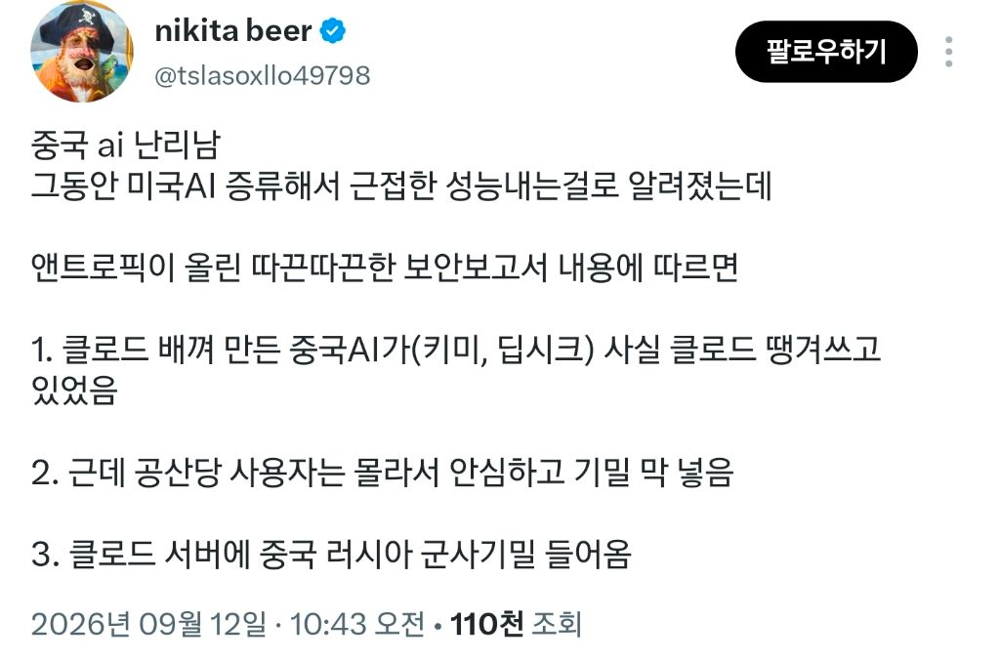
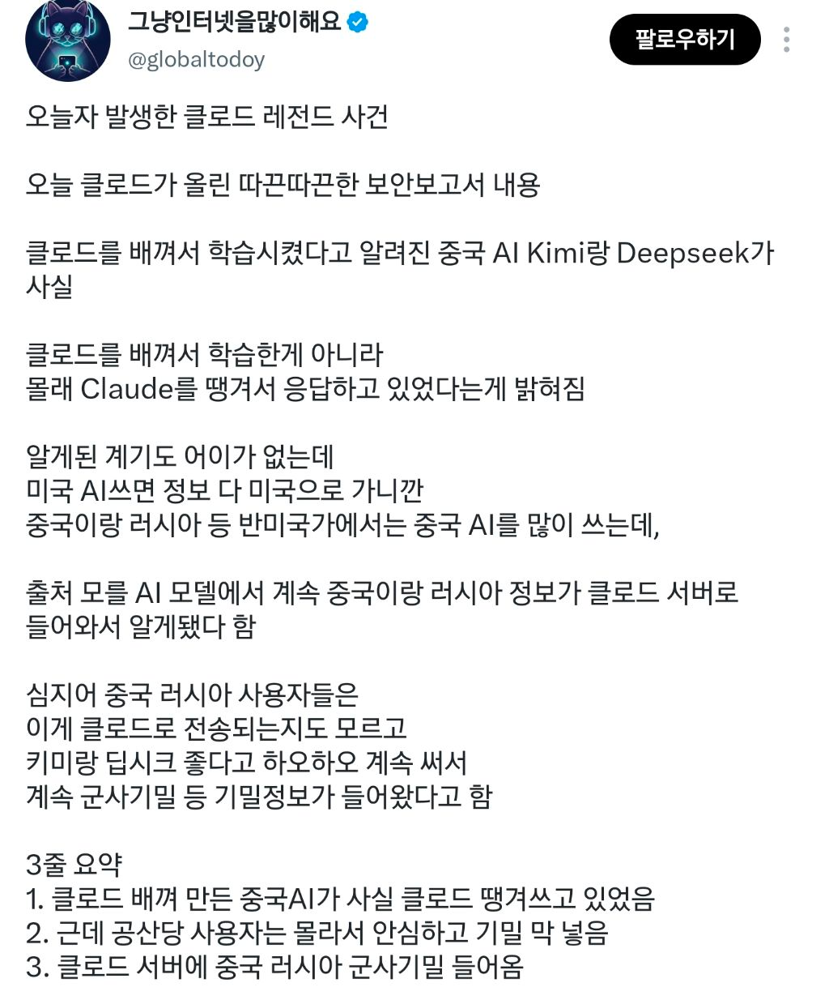

https://cafe.daum.net/truepicture/Qt7/1356816?svc=cafeapi


https://cafe.daum.net/truepicture/Qt7/1356816?svc=cafeapi


근데 기밀이랄게 뭐 있으려나 웬만한건 스파이로 다.캘 수 있고 극비는 수뇌부 소수만 아는 정보일텐데ㅋㅋ 솔직히 군사비밀이란게 별거 없는게 대부분임 특히 우리나라는 웬만한 기밀들 국회의원들이 다 떠벌리고 다니던데 ㅋㅋ
그럼 기업 개인이 넣는 코드나 정보도 사실상 앤트로픽이 접근 가능하긴하단거네
그래서 기업 기밀 입력하지 말라고 보안교육함
미국이 한수위네 역시
예상한 시나리오중 하나일듯
로컬 모델도아니고 온라인 모델에 기밀 넣기 ㅋㅋㅋㅋ
로컬 모델이 있음에도 저렇게 할 이유를 생각해보면
어쨌든 증류는 해야하는데 데이터는 많으면 많을 수록 좋으니까
클로드나 OpenAI API 땡겨 쓰면서 유저에게 대답도 제공하고 중국 AI 회사는 그거 가지고 증류도 하고
여러모로 보안 문제 아니면 나쁠 게 하나 없는 접근인데 문제는 보안이지
페이블5 첫 출시때 안보를 이유로 미국 주정부가 잠시 사용제한 걸었었는데
ai 이게 점점 볼수록 단순 사기업이 이익추구 하자고 다룰 물건이 아닌 거 같음
이번에 클로드에서 퇴사한 사람나옴
AI 무한 경쟁으로 인류가 멸망할수도 있다 이렇게 경고남기고 퇴사함
그러니깐 딥시크를 쓰면 공짜로 페이블은 쓴다는 거지?
잘은 모르겠으나 꼴이좋아?
폭로왜하냐 군사기밀이나 더받지
그런 가치도 없었단거임 진짜 중요한거였으면 유출되지도 않음ㅋㅋ
이미 알고 있던 거라
딥시크 대표 녹취록 퍼진거 있는데
지금 컴퓨팅 파워가 너무 벌어져서 도저히 따라잡을 수 없다고 하더라
겉으로는 1개월 3개월 차이라는데 실제로는 몇년 차이라더라 한참 벌어져 있다고 얘기함
GPT 아스트라도 그렇고 실제 훈련 완료하고 내부적으로 평가 기간 못해도 반년 이상 거치는거 같으니까 소비자에게 공개되는 성능보단 더 벌어져 있는게 확실함
그리고 중국 모델들은 추론 과소비로 차력쇼 하는 경향이 엄청 심해서 실제 체감 성능도 한번 걸러서 봐야함
그치 게다가 걔네는 제약이 없는 상태로 별별거 다 해볼테니...
딥시크 만든애 사형당하겠네 ㅃㅇ ㅋㅋ
이러면 ai는 거의 미국 독주체재 아닌가
이거 발표 안하고 nsa, cia랑 협력해서 중러 정보 다 뽑아 먹었어야 하는거 아닌가? ㅋㅋ
hbm 차이때문에 넘사벽이여
딥시크 구라친거였나
ㅋㅋㅋㅋㅋㅋㅋ 근데 이거 말 안하고 계속 빨아먹으면 ㅋㅋ

세상 돌아가는거 이렇게만 보면 ㄹㅇ 존나 재밌는 영화나 다름없다 ㅋㅋㅋㅋㅋㅋㅋ 답도 없는 나라잖아 진짜 ㅋㅋㅋㅋ
제대로 된다 싶으면 '구라'네 ㄷㄷㄷ
ㅋㅋㅋㅋㅋㅋㅋㅋㅋ
짜가 만드는거 전문인 새끼들이 AI도 짜가 만들었네..ㅋㅋㅋ 그냥 택갈이 한 클로드네.. ㅋㅋ
지금 게임이나 홈페이지 한큐에 게임만드는게 어떻게 되는거겠냐.. 코덱스 서비스한다치고 모든 코드는 전부 오픈ai에 기록되는거임 적절한 메모리에서 빼오기만하는거고
모든 정보도 마찬가지지
지금 ai투톱이 미 중아님?
근데 이런거였우몬 중국 ai 수준이 어케되는거여
클로드인척 광고하던 ai팔이=클로드 아님
국산 신토불이라고 광고하던 ai팔이=클로드임
?????
중국 특유의 성과주의때문에 퍼포를 우선 보여야 하거든
그러다보니 저렇게 되는거지
사람들이 괜히 로컬로 돌리는게 아니지
OpenAI >= Anthropic >>> 중국모델 >= Google 이정도인듯
긍까 중국.ai거짓이네 ㅋ ㅋ
진짜였음 미국이 이걸 알렸겠니